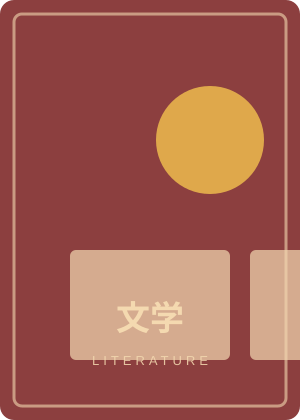
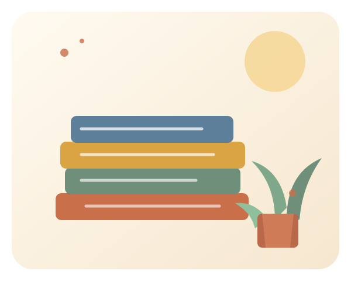
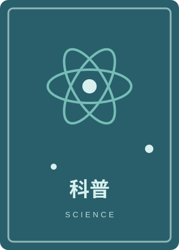

《城南旧事》
童年像一串风铃，轻轻一碰，就有温柔的回响。
文学已读这里是姚在熙的读书记录。把读过的每一本书、写下的每一段札记，都变成看得见的成长轨迹。愿阅读像一盏小灯，照亮日常，也照亮远方。
逛逛我的书架 → 了解阅读宣言
三本陪我度过深夜的好书

童年像一串风铃，轻轻一碰，就有温柔的回响。
文学已读
抬头看星星的时候，也在看时间的形状和宇宙的边界。
科普重读
自由，就是被别人讨厌的勇气，也是接纳自己的开始。
成长在读阅读之后，留下一点自己的声音
“童年是藏在骆驼铃里的慢时光。”
合上书才明白，成长不是把过去丢掉，而是带着它继续往前走。
“我们都是星尘，却在读 stars。”
科普书最有意思的地方，是把熟悉的世界重新变得陌生又可爱。